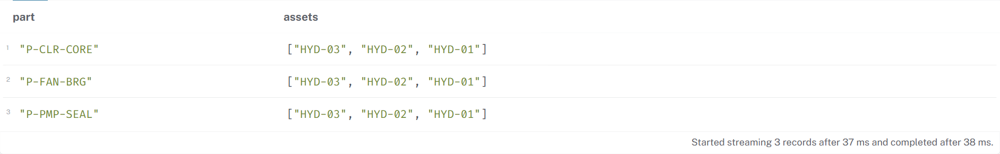
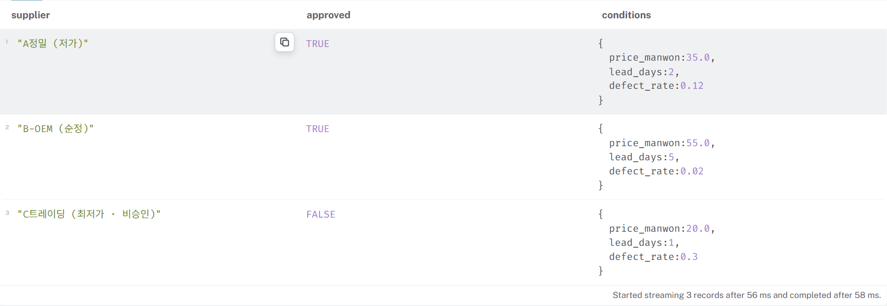

HYD · 실습 가이드부품별 사용 설비와 공급 조건 조회하기
앞 단계의 완성 모델에서 출발해 적재·조회 로직을 직접 작성합니다.
01 시작하기
입력/에 앞 단계 완성 모델과 원자료가 있습니다. 이전 개인 결과 없이 시작할 수 있습니다. 개인 모델을 쓰려면 제공 입력을 보존하고 별도 폴더에 복사하세요.
VS Code에서 START.md를 열고 이번 요구를 확인하세요.
입력/ 이전 단계 자료
자료/ 현장 원자료(설계 실습)
결과/ 이번에 만들 결과
AGENTS.md 작업 규칙
터미널에서 아래 명령을 실행하세요. Docker가 실행 중이어야 합니다.
python lab_db.py
「랩 DB 준비 완료」가 나오면 열린 Browser의 Protocol에서 bolt://를 선택하고 Connection URL에는 출력 주소의 127.0.0.1:포트 부분만 넣으세요. Database user는 neo4j, Password는 비워 두고 Connect를 누릅니다. 연결 정보는 랩_연결.json에도 저장됩니다.
02 요구 정하기
- 선택한 부품을 사용하는 설비와 구성 요소는 무엇인가?
- 그 부품의 공급사별 승인 여부·단가·불량률·납기는 무엇인가?
- 원자료에 없는 품번을 조회했을 때 결과 없음이 구별되는가?
자료에서 답의 근거를 찾고 AI에 전달할 목표와 제약을 정리하세요.
03 AI와 만들기
AI와 적재·조회문을 작성하세요. 같은 입력을 두 번 적재해도 대상과 관계가 늘지 않아야 합니다. 이름이 바뀌어도 같은 ID의 대상은 유지되어야 합니다. 전체 삭제문은 사용하지 마세요. 고칠 것이 생기면 필요한 대상만 수정하세요. P-PMP-SEAL을 확인 사례로 사용 설비와 공급 조건을 원자료와 대조하고, 다른 품번과 원자료에 없는 품번도 조회하세요. 비승인 공급사는 승인 여부와 함께 구별해 보여 주세요.
한 기능의 결과를 확인한 뒤 다음 작업을 요청하세요. 수정 요청에는 입력·기대 결과·실제 결과를 함께 전달하세요.
요청을 정리할 때 볼 항목
만들 결과 / 참고할 자료 / 바꾸지 않을 범위 / 성공을 확인할 사례
04 결과 확인하기
python lab_db.py
Neo4j Browser에서 작성한 적재문 실행 → 조회문 실행 → 같은 적재문 재실행
- P-PMP-SEAL의 사용 설비는 HYD-01·02·03입니다.
- 공급 조건 3행을 원자료와 대조합니다. 비승인 공급사도 승인 여부를 표시해 구별합니다.
- 다른 부품은 그 부품의 조건을 반환하고, 없는 품번은 결과 없음으로 나타납니다.
- 가격·납기로 공급사를 자동 선정하지 않습니다.
- 같은 입력을 재적재해도 노드·관계 수가 늘지 않습니다.
원자료와 실제 결과를 대조하세요. AI의 완료 메시지는 실행 결과를 대신하지 않습니다.
공유 부품 조회 예시입니다. 각 품번의 사용 설비를 원자료와 대조하세요.

P-PMP-SEAL의 공급 조건입니다. 승인 여부와 함께 단가(만원), 불량률, 납기(일)를 확인하세요. 0.12는 12%입니다.

05 저장하기
결과/load.cypher, 결과/query.cypher, 결과/검증_기록.md
저장한 파일을 다시 열어 내용을 확인하고, 보관할 결과를 USB 또는 개인 클라우드에 복사하세요.
다음 실습은 시작 도구에서 새로 선택합니다. 개인 결과를 가져오지 않아도 시작할 수 있습니다.